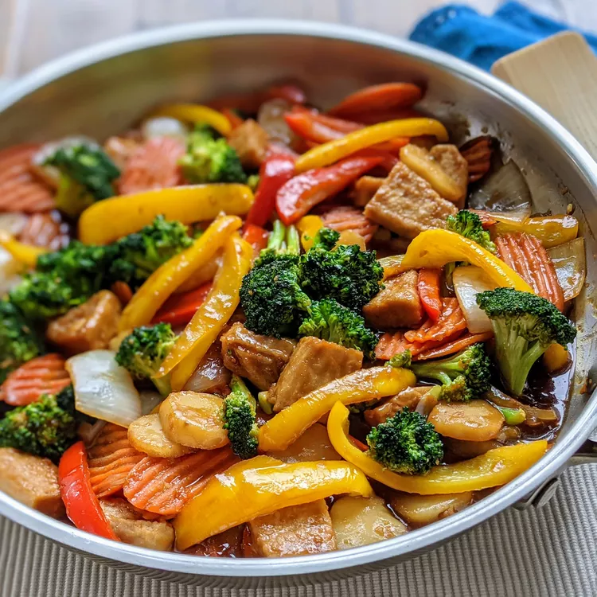

Chicken stir Fry
Home

This chicken stir fry recipe is packed with veggies and a delicious sweet
and savory soy, ginger, and galic sauce that gets a kick from chili flakes.
Serve with white or brown rice for a quick and easy weeknight dinner.
Ingredients
- 4 cups water
- 2 cups white rice
- 2/3 cup low-sodium soy sauce, or to taste
- 1/4 cup brown sugar
- 1 tablespoon cornstarch
- 1 tablespoon minced fresh ginger
- 1 tablespoon minced garlic
- 1/4teaspoon red chili flakes
- 3 skinless, boneless chicken breast halves, thinly sliced
- 2 tablespoons sesame oil, divided
- 1 head broccoli, broken into florets
- 1 onion, cut into large chunks
- 1 cup sliced carrots
- 1 (8 ounce) can sliced whater chesnuts, drained
- 1 green bell pepper, cut into matchsticks
directions
- Gather all ingredients.
- Bring water and rice to a boil in a saucepan over high heat. Reduce heat
to medium-low, cover, and simmer until rice is tender, and liquid has been
absorbed, 20 to 25 minuts.
- Meanwhile, combine soy sauce, brown sugar, and cornstarch in a medium glass
or ceramic bowl; stir until smooth.
- stir in ginger, garlic, and red pepper flakes; add chicken and stir to
coat. Cover and marinate in the refirgerator for at least 15 minutes.
- Heat 1 tablespoon sesame oil in a wok or large skillet over medium-high heat.
Add broccoli, onion, carrots, water chesnuts, and bell pepper; cook and stir
until just tender, about 5 minutes.
- Transfer vegetables into a dish; set aside.
- Heat remaining 1 tablespoon sesame oil in the same wok or skillet over medium-high
heat. Add chicken, reserving marinade, and cook until just browned, about 2
minutes per side.
- Stir in vegetables and reserved marinade. Bring to a boil; cook and stir
until chicken is no longer pink in the center and vegetables are tender,
5 to 7 minutes.
- serve over rice